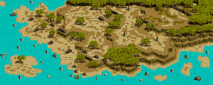
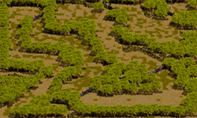

ギルド ポイント戦
ポイント戦とは、 攻城戦の参加ギルドの組み合わせを決めるための「vsモンスター戦」です。
1ギルドごとに期間中週2回まで参加可能です。
挑戦にはランク1以上のギルドホールが必要です。
概要
ダンジョン内容
概要
ポイント戦全般のルールについて解説。入場方法
・ギルドマスター(もしくは副ギルドマスター)がリーダーとなり、2人以上のパーティーを組む・参加するパーティーメンバーが全員ギルドホールに入る
・ギルドマスターがギルドホールNPC「ギルド事務官」に話かける( 1- 2- 1)
日程
・土曜日7:00～ 金曜日22:00・金曜日の22時までに入場できれば参加可能(ダンジョン崩壊時間制限あり)
・ポイント戦そのものの締め切りは土曜日の1時まで。
・締切時点での獲得ポイントを元に、攻城戦の組み合わせが決まります。
・締め切りごとにポイント戦ランキングはリセットされます。
基本ルール
・ポイント戦は「プレイヤーvsモンスター」でおこなわれます。・各ステージのボスを倒すことで先に進めます。
・PTメンバーが全滅(全落ち)するか制限時間終了でゲームオーバー。
・物資(ポーションなど)はPVPではないため自由に利用可能。
・全てのギルドメンバーが参加可能。(Lv制限無し)
獲得ポイント確認方法
・自分のギルドのポイントはギルドウィンドウ(F7)より確認可能。・各ギルドホールの「ギルド事務官」より同ギルドホールの上位ギルドポイントを確認可能。(最大30ギルド)
・ポイント戦上位ギルドが上位のギルドホールを賭けた攻城戦に参加できます。
ポイント計算式
・敵のモンスターレベル * 80 が加算ポイント・一部モンスターはエリア入場時にレベルがランダムで決定されるため、その影響でギルドごとにポイントが変動します。
・旧ポイント戦と異なり、タイムボーナス要素は撤廃された模様。
・PTメンバーが死亡すると[キャラクターのレベル * 80]が減点されます。
・最終エリアのみタイムボーナスが[残り時間] * 10 ptで加算されます。
金鯖の場合
・ワールド合併・金鯖等の新規サーバの場合、 ギルドホールランクが1でリセットされます。・金鯖の場合、初週はポイント上位の対象ギルドがギルドの枠数分自動的に上昇
※最初の週であれば上位20ギルドが自動上昇
※攻城戦無し
・2週目は(Rank2 vs Rank1)のみ発生、Rank2内で上位7ギルドが攻城戦無しで自動的にRank3になります。
・以降の週も同様に繰り返され、ランク1～ランク5のギルドホールを持つギルドに振り分けられます。
ダンジョン内容
・モンスターのレベルに応じてポイントが決定されますが、レベルのランダム要素が強いのは主に第1エリア。・第4エリアや第5エリアのようにmobのレベルが固定されている所もあります。
・そのため、第1エリアの時点でおおよその最終ポイントが推測つくこともあります。
・専用マップ（全5ステージ）で行われ、各ステージにいるボスモンスターを倒すことで、次のステージへ進むことができます。
・十分に攻略するにはおおそよ600～700レベル辺りの狩場、PTボスを死なずに狩れる程度の実力が必要。
ステージ１
・転送後の位置が第1エリアのため、転送後の位置で支援補助を済ませ進む。
・エリア自体に制限時間は無し。
・すべての敵を倒す＋ボスを倒すの繰り返し。
第1エリア内の「トーチリザード」「リザード歩兵」「リザード指揮官」を倒す
第1エリアのボス「ボス指揮官ガーザンパ」が湧くので倒す。(1分以内)
※時間内に倒せなかった場合ポイント戦終了
倒したら第2エリア入り口の扉をあけて進む。エリア自体に制限時間は無し。
「鷲狂戦士チック」 「鷲二等歩兵」 「鷲一等歩兵」 「魔犬」を全て倒す。
エリア内のMOBを全て倒すと第2エリアのボス「鷲狂戦士チック」が湧くので倒す。(1分以内)
※時間内に倒せなかった場合ポイント戦終了
倒したら第3エリア入り口の扉をあけて進む。エリア自体に制限時間は無し。
「司令官ツバク」 「アウトローベア」 「オーガ軍団兵」 「オーガ軍団長」を全て倒す。
エリア内のMOBを全て倒すと第3エリアのボス「司令官ツバク」が湧くので倒す。(1分以内)
※時間内に倒せなかった場合ポイント戦終了
倒したら第4エリア入り口の扉をあけて進む。
チェックポイント④第四エリア内の柱（クリック）
エリア中央の柱をクリックすると「骸骨騎士」が湧くので全て倒す。(2分以内)
「第4エリアの‘骸骨騎士’をすべてやっつけました！」（全部倒した時に出る）と出たらステージ１クリア。
エリア4の骸骨騎士をすべて倒しきらないうちに次のステージに行く扉を触ると、エリア4の骸骨騎士を全滅させても
カウントダウン消えない(止まらない)状態になる。もちろん時間切れでポイント戦終了。
なおステージ2を始めると改めてカウントダウン(ステージ2の)が始まるが、前のステージのカウントダウンは見えないだけで持続している。
そのまま進んでしまうと、ステージ2の途中で時間も残っているのに「骸骨騎士を全滅できませんでした」と突然表示が出てポイント戦終了。
ステージ２
・敵を倒すと制限時間が回復(初期は1分)
・最深部の大将軍バーノンを倒すことでステージクリア
・
リーダーが「ブルンギルド勇者」と話す。
第1エリアへの扉をクリック。
制限時間が1分間延長。
「森ゴブリン兵」「森の門番」「森の守護士」を倒す(1匹当たり制限時間+2秒)
守護者エント＋エント守護兵（守護者エントのタゲを取ると湧く）が出現、倒す。
※守護者エントは30秒回復、エント守護兵は4秒回復
※エント守護兵が再湧きしましたが、現在は修正されている模様。
チェックポイント第2エリアへの扉をあける。
森の幻術師(＋4秒)森の原始人(＋3秒)を倒しつつ進む
「魍魎使いハンセン」(+35秒)のタゲを取ると「ダークスター」(+4秒)が出現、倒す。
魍魎使いハンセンを倒したら次の扉へ
チェックポイント第3エリアへの扉へ
森の破壊者(+5秒) フォレスガゴイル(+2秒)を倒しつつ進む
テラザック・アイのタゲを取って敵を出現させたあと、全て倒す。(＋40秒)
テラザック・アイを倒したら次の扉へ
※敵の魔法抵抗注意
森の亡霊(+4秒) 下級デビルナイト(＋3秒) 下級悪魔術師（＋2秒） を倒しつつ進む。
「ガラキス男爵」(+45秒)のタゲを取って「ガラキスゾンビ兵」(＋6秒)を出現させる、全て倒す。
※デビルスピード(移動/攻撃速度増加)が厄介。
ガラキス男爵を倒したら次の扉へ
第5エリアの塔をクリックするとバーノンの幻影が湧く
バーノンの幻影を全て倒す。
大将軍バーノンが出現、倒す。（プレイヤーが死亡する度に10秒制限時間が減少？）
※敵の魔法抵抗が高く、弱化装備が欲しい。加えて火抵抗が必要。
大将軍バーノンを倒したら出口へ
ステージ３
・内容はステージ1と似ていますが、モンスターが大幅に強化されています。
・(ステージ1はLv200程度に対してこちらはLv470程度)
・途中魔法無効モンスターや高火力モンスターがいるため、タゲ取り役がいると攻略が楽になります。
扉を抜けて第1エリア内を少し進むと捕虜の勇者が居るのでリーダーが話す
「ジャイアント」が出現。制限時間内に全て倒す。
リーダーが捕虜の勇者と話す。
第2エリアの扉(上側)をリーダーがクリックして進める
第3エリアに先に行っても「第2エリアの遊撃隊長ダハークを倒していない！」と出て扉は開かない。
扉を開け第2エリアへ
「闇の遊撃隊員」を全て倒す
「遊撃隊長ダハーク」が出現、倒す。(1分以内)
リーダーが扉を開けて第3エリアへ進む
「闇の騎士」を全て倒す。
「騎士隊長ビケイン」が出現、倒す。
リーダーが扉を開け第4エリアへ行く通路へ
「アウトローコング」を倒す。
「パンプキンヘッド」が出現、倒す。
全て倒すとキングヘッド出現するので、倒す。
リーダーが第5エリアへの扉を開く。
［制限時間］内に、第6エリアに続く扉を開く。(最初の20秒はオーガが動くまでのダミー時間)
「テラザックの幻影」(オーガ)は20秒経過前に倒してもポイントとして加算されないので待機。
20秒経過後の制限時間が正規の制限時間(4分)。全てのオーガを倒す。
最初の20秒間は「テラザックの幻影」はノンアクティブ。扉をあけて次に進むことも可能。(※ポイントが入らない)
リーダーが第6エリアへの扉を開く。
「マーダマーシャル」が出現、倒す。
全て倒すとマーダー・オルガが出現。倒す。
倒して扉を開けるとステージ3クリア。
ステージ４
・敵は全てモグラ(移動しない)。倒せば倒すほど制限時間が延長されます。
・敵の攻撃が激しく、かつ敵のHPが多いため600付近のPTボスを安定して倒せる程度の実力が必要。
・全てスルーしてステージ5に行くことも可能ですが、ポイントは加算されません。
「入場門」をリーダーがクリックして開く
開いたら右上の退場門を目指す。(初期制限時間は1分)
「ニューサンス」（モグラ）が大量に出現するので、倒す。(1体ごとに+20秒)
モグラは遠距離土ダメ＋ワームバイト(闇ダメ)を使ってくる。
途中アースクェイク(固定1000ダメ？)がマップ全体に入ることもある。
チェックポイント②第４ポイント退場門を時間内に誰かがクリックすることでステージ完了。
ステージ５
・ボスを倒すことでポイント戦クリア
・制限時間が残り3分を切ったタイミングで取り巻きのモンスターが出現するので、全て倒す
・戦闘中にHPを大幅に削られる要素があるため、敵Lvと同じぐらいのLv600は欲しい
「悪魔テラザック」を制限時間内に倒す。
制限時間が残り3分になると「地獄の門番」するので倒す。
※地獄の門番は制限時間が３分を切ると出現するのでそれ以前にテラザックを倒さず削っておく。
・「悪魔テラザック」はスキル改変で強化された「ワイルドスタンプ」を使ってきます。
・耐えるにはHP1万程度が欲しい。
・加えて、一定時間経過後にタゲを取ってるPTメンバーに9割ダメージ＋強制転移などを使ってきます。
・マップ移動直後の細道付近で強制転移を回避可能。
備考
・ポイント戦は1度内容リニューアルが行われています。・8人で行くと5~7番目辺りの人が落ちやすい可能性あり。
・他ランクのポイント戦状況を確認したい場合、ギルドホールランキング(公式サイト)を使って確認することもできます。
・ギルドマスターは副ギルドマスター・ギルド元老に対してポイント戦の実行権限を割り振ることもできます。
[ギルド設定]タブより[ギルドメンバー権限設定]を選択、対象のチェックボックスをクリック。

参考
・ ポイント戦(公式サイト)・ ポイント戦シミュレータ